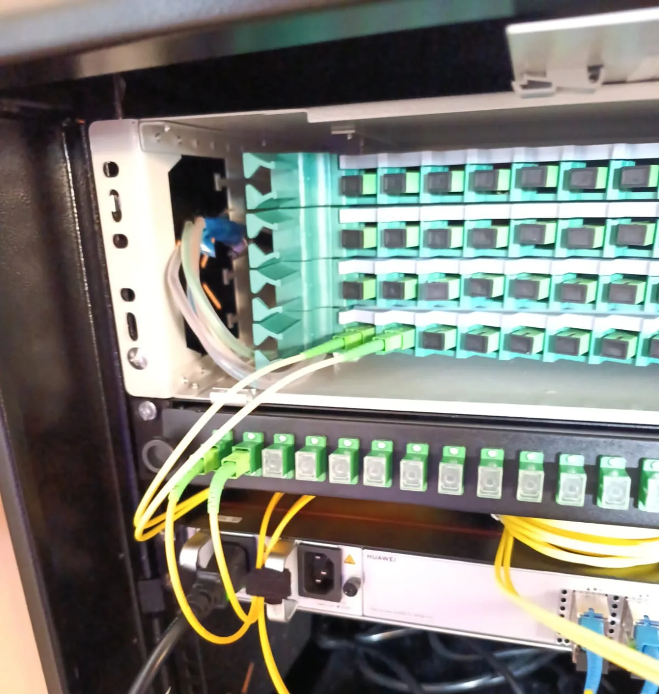

Red de fibra óptica hasta el usuario en el Putumayo

Putumayo · Mocoa, Puerto Caicedo, Sibundoy, Colón y Santiago · agosto a octubre de 2026
Red de fibra óptica en cinco municipios del Putumayo: troncales y ramales en poste, nodos con racks y gabinetes, empalmes en cierres y en el ODF, cajas NAP y el servicio instalado en cada usuario.
- Redes troncales
- Tendido de ramales
- Instalación de rack
- Empalmes de fibra óptica
- Instalación de cajas NAP
- Instalación de usuarios y servicio
Redes troncales
Cable troncal en poste, con sus reservas enrolladas y los herrajes de sujeción. El trabajo en altura se hace con escalera y la zona delimitada con conos.
Tendido de ramales
Cable de ramal enrollado en chipa sobre el terreno, listo para tenderlo entre postes.
Instalación de rack
Racks y gabinetes de pared con el ODF, los pigtails organizados y los equipos del nodo.


Empalmes de fibra óptica
Cierre de empalme abierto en campo y bandeja del ODF con las fusiones alojadas.


Instalación de cajas NAP
Cajas NAP y sus accesorios preparados antes de llevarlos a los postes.

Instalación de usuarios y servicio
ONT instalada en la vivienda del usuario y conectada con el cable de acometida.